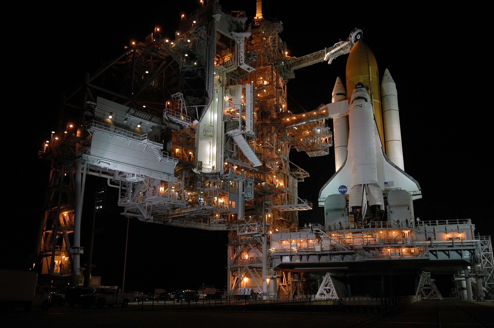
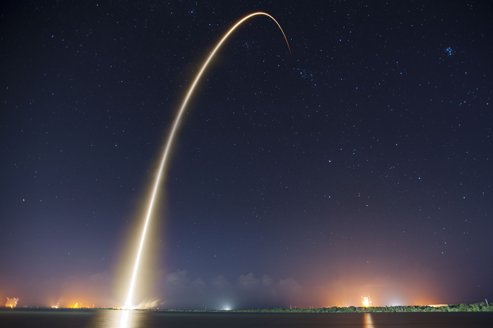
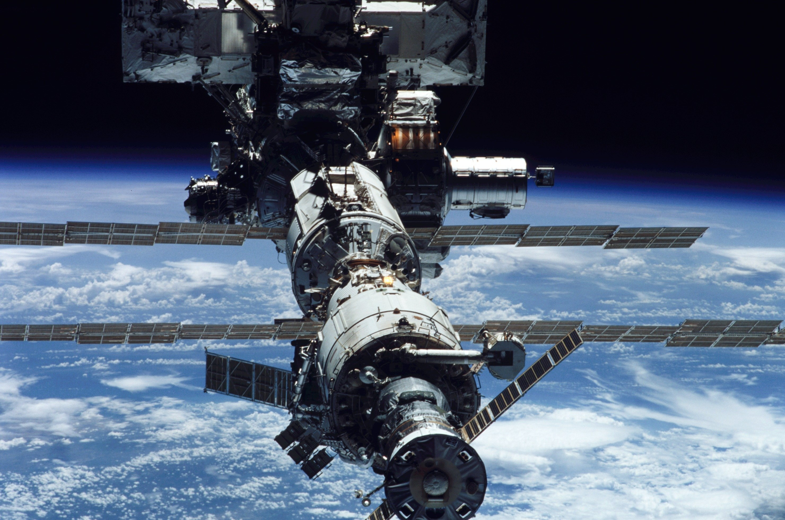
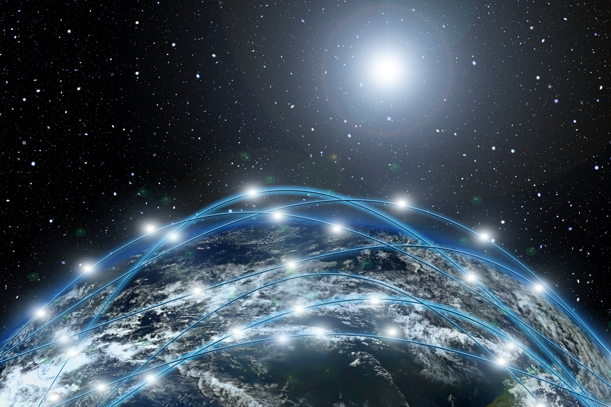
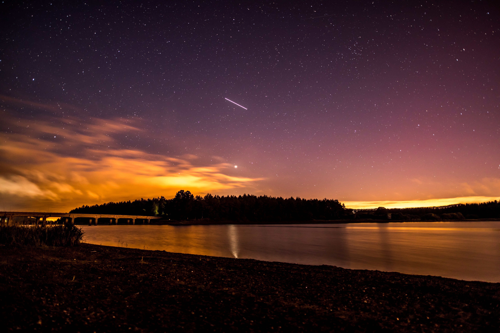
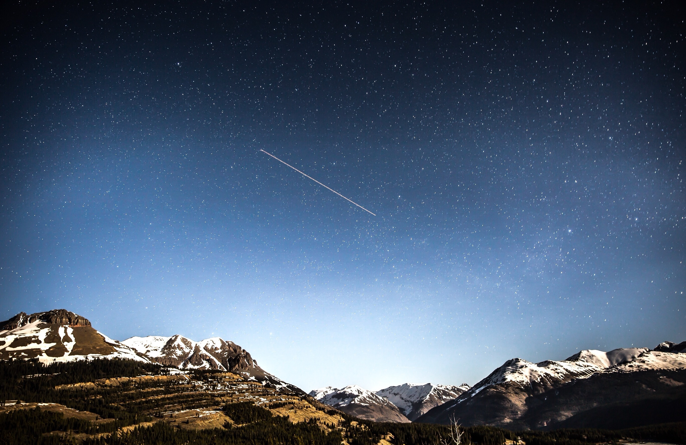
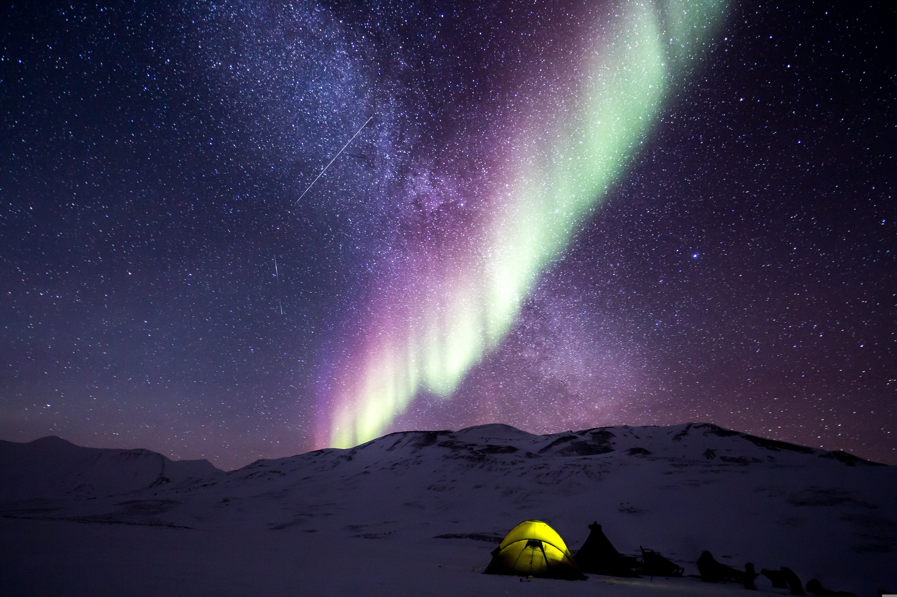
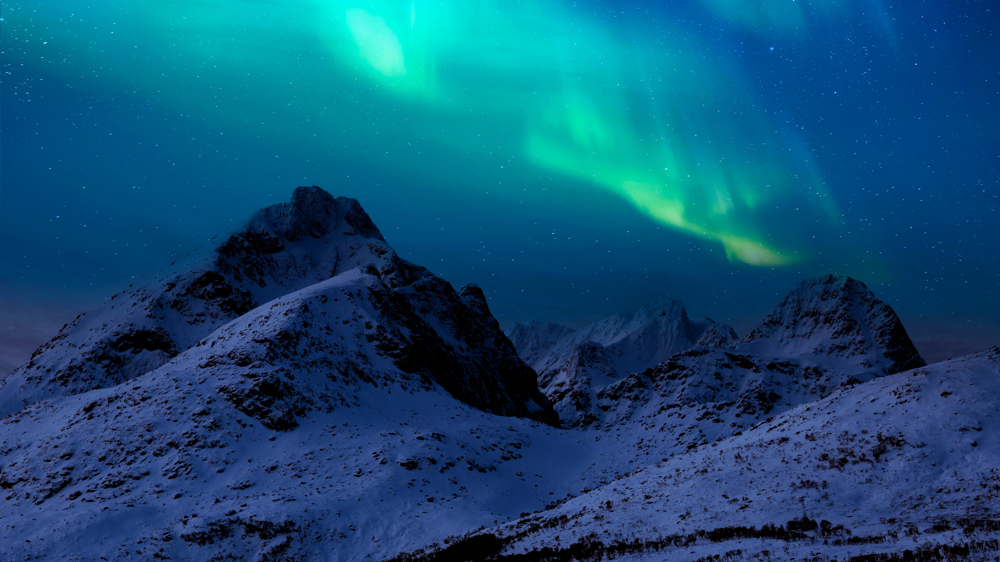

Raketit
Nousevan raketin tunnistaa yleensä kirkkaasta, kohoavasta, punahehkuisesta pisteestä ja taivaalla mahdollisesti jäävästä pakokaasuvanasta. Raketti tai paremminkin sen kirkkaat suulieskat saattavat näkyä hyvinkin kirkkaana ilmiönä taivaalla. Valopisteen alapuolella erottuu lähes aina alaspäin suuntautuva sumumainen kiila, joka saattaa levitä raketin alle hyvinkin komeana. Joskus havaitaan rakettien nousujen yhteydessä kantorakettien vaiheiden irtoamisia, jotka saattavat jättää taivaalle erillisiä vanoja. Eri vaiheiden palaminen näkyy kohteessa yleensä kirkkaina, satunnaisina välähdyksinä.
Lähde: URSA


Satelliitit
Tähtikirkkaat illat tarjoavat erinomaisen hetken satelliittien tarkkailuun. Hämärän aikaan noin tunti auringonlaskun jälkeen satelliitit näkyvät äänettöminä vaeltavina valopisteinä tähtien joukossa. Satelliittien liikenneruuhka näkyy parhaimmillaan parin tunnin ajan auringonlaskun jälkeen. Maata kiertää parhaillaan yli 30 000 suurempaa keinotekoista kappaletta. Vain murto-osa näistä näkyy paljain silmin ilman apuvälineitä.
Lähde: URSA


Tähdenlennot
Perseidit ovat melko nopeita, kirkkaita ja usein punertavan vanan jättäviä. Vanat saattavat jäädä taivaalle useaksi sekunniksi ja kirkkaimmissa bolideissa jopa minuuteiksi (ominaista lähinnä kakkosmaksimille). Tunnissa voi odottaa näkevänsä 50 - 70 perseidiä, joka edellyttää suotuisia olosuhteita. Valokuvausharrastajia tämä parvi suosii erityisesti.
Lähde: URSA


Revontulet
Revontulet muodostavat yli 100 kilometrin korkeudella loimuavan valonäytöksen, joka syntyy kun aurinkotuulen mukana kulkeutuvien hiukkasten viritystila purkautuu Maan ilmakehän yläosissa. Viritystilan purkautuminen synnyttää revontulet, joita näkyy todennäköisimmin lähellä napa-alueita sekä eteläisellä että pohjoisella pallonpuoliskolla.
Lähde: Foreca


Haluatko tutkia lisää?
Täältä löydät lisää tietoa taivaan tapahtumista